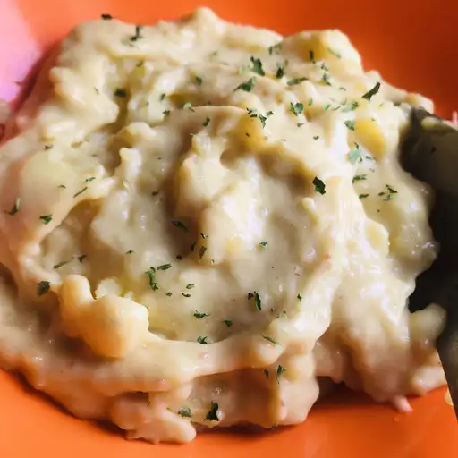

Odin
 Recipes
Recipes
Mashied Potatoes
Old-fashioned mashed potatoes

"Old-fashioned mashed potatoes. Photo by DOTDASH MEREDITH FOOD STUDIOS
Prep Time: 15 mins Cook Time: 20 mins Serves: 4
Ingredients
- 2 pounds baking potatoes, peeled and quartered
- 3 cloves garlic, peeled, or to taste (Optional)
- 1 cup milk
- 2 tablespoons butter
- salt and ground black pepper to taste
Directions
- Bring a large pot of salted water to a boil. Add potatoes and garlic, lower heat to medium, and simmer until potatoes are tender, 15 to 20 minutes.
- When the potatoes are almost finished, heat milk and butter in a small saucepan over low heat until butter is melted.
- Drain potatoes and return to the pot. Slowly add warm milk mixture, blending it in with a potato masher or electric mixer until potatoes are smooth and creamy. Season with salt and pepper.

Photo: Hairan Umar
Recipe from allrecipes.com